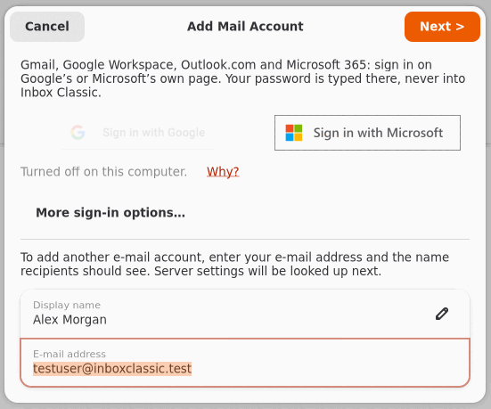

Dodavanje naloga e-pošte
Dodajte nalog e-pošte tako što ćete se prijaviti putem pregledača ili uneti adresu i lozinku.
Kada se Inbox Classic prvi put pokrene, otvara prozor Dodaj nalog e-pošte. Da biste kasnije dodali još jedan nalog, izaberite Datoteka > Novi nalog.

Gmail, Google Workspace, Outlook.com ili Microsoft 365
Da biste dodali nalog preko pregledača:
- Kliknite na Prijavite se pomoću Google naloga ili Prijavite se pomoću Microsoft naloga. Pregledač otvara stranicu za prijavu pružaoca usluge.
- Prijavite se tamo, a zatim se vratite u Inbox Classic. Nalog se dodaje i počinje preuzimanje pošte.
Zasivljeno dugme je onemogućeno na ovom računaru. Kliknite na Zašto? ispod njega da biste videli razlog.
Bilo koji drugi nalog
Da biste dodali nalog sa lozinkom:
- U polje Ime za prikaz unesite svoje ime onako kako treba da ga vide drugi.
- U polje Adresa e-pošte unesite svoju adresu.
- Kliknite na Dalje >. Inbox Classic traži podešavanja pružaoca usluge, što može da potraje. Dugme Otkaži preskače traženje.
- U polje Lozinka unesite svoju lozinku.
- Proverite podešavanja servera, a zatim kliknite na Završi. Inbox Classic se prijavljuje i preuzima vaše fascikle.
Za neke prepoznate pružaoce usluge Inbox Classic prikazuje uputstvo za lozinku za aplikaciju. Koristite je samo ako je nalog podržava; za Outlook.com i Microsoft 365 koristite prijavu putem pregledača.
Naziv naloga je naziv pod kojim se nalog vidi na listi fascikli, na primer Posao. Novi nalog dobija naziv pružaoca usluge ili svog domena. Možete ga promeniti bilo kada u svojstvima naloga.
Da biste se prijavili pomoću sopstvene aplikacije za prijavljivanje, na prvoj stranici kliknite na Još opcija za prijavljivanje i izaberite je.